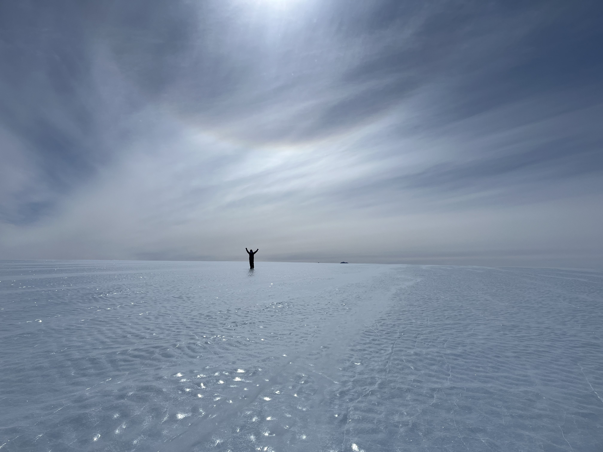
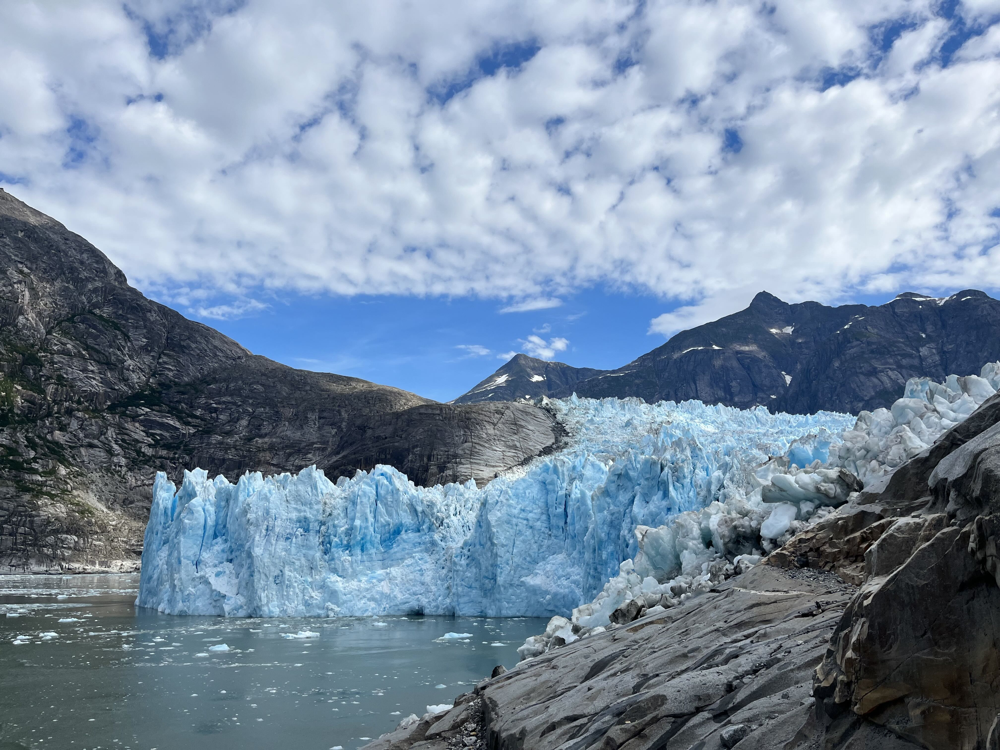
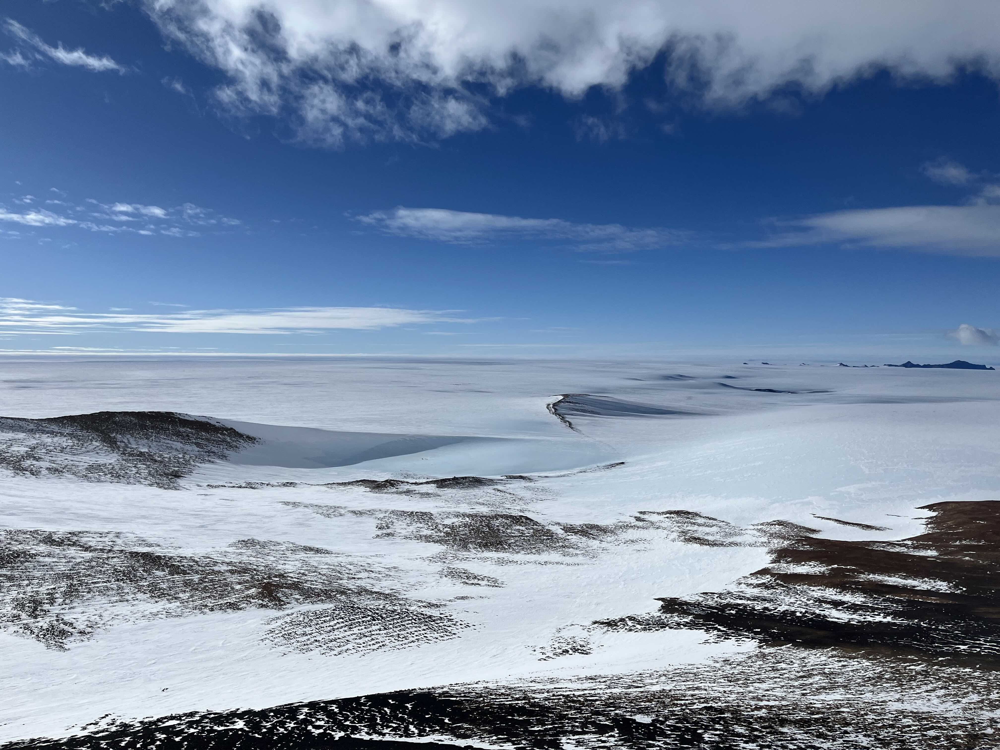
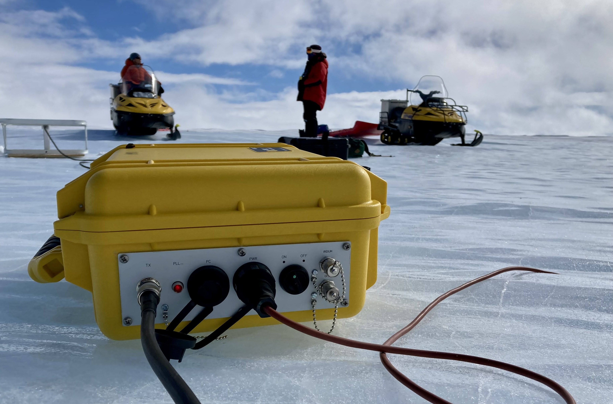

Research
I am broadly interested in measuring and modeling the flow of ice. For my PhD research, I am studying the dynamics of the Allan Hills, Antarctica: a blue ice area where the oldest known ice on Earth has been recovered!
I’ve been to Antarctica twice to collect ice penetrating radar and GPS data. These data can show how the ice is flowing in the present-day. And conditions today – such as the shape of radar layers or the orientation of ice crystals – can help constrain ice flow in the past. I use simple kinematic models to compare with data to learn about past and present ice flow.
Learn more about my research →Research Projects
View all projects →
Tidewater Glacier Calving
Calving of icebergs from tidewater glaciers contributes significant energy, which accelerates water velocities and increases melting.
Learn more →
Ice Flow at the Allan Hills
Simple modeling and phase-sensitive radar measurements capture the complex flow of the Allan Hills blue ice area.
Learn more →
Field Observations
Collecting radar, GPS, and surface data across Antarctica to study ice processes.
Learn more →